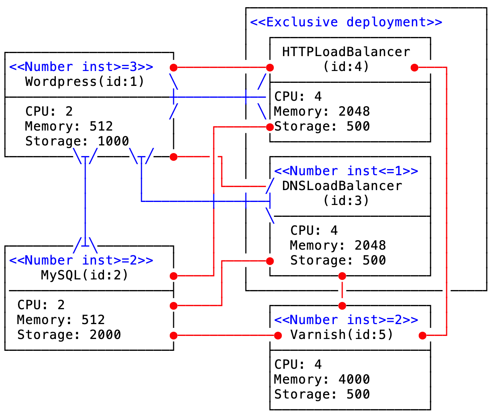

This work is licensed under a Creative Commons Attribution 4.0 International License.
This work is licensed under a Creative Commons Attribution 4.0 International License. Proposed by David Bogdan-Nicolae
Wordpress (https://wordpress.com) is an open-source application frequently used in creating websites, blogs and web applications. A high-load and fault tolerant Wordpress deployment scenario is described as follows. The two characteristics are ensured by load balancing. One possibility to balance the load is at the DNS level using servers like Bind. Alternatively, one can use as website entry point an HTTP reverse proxy capable of load balancing such as Varnish. In both cases, Wordpress instances need to be configured to connect to the same database. Furthermore, having redundancy and balancing at the front-end level, one would expect to have them also at the Database Management System (DBMS) level. One way to achieve that is to use a MySQL cluster and configure Wordpress instances with multiple entry points to it. In this deployment scenario, the following constraints must be fulfilled: - DNSLoadBalancer requires at least 1 instance of Wordpress and can serve at most 7 such instances (Require-Provide constraint). - HTTPLoadBalancer requires at least 1 instance of Wordpress and can serve at most 3 such instances (Require-Provide constraint). - Wordpress requires at least 3 instances of MySQL and MySQL can server at most 2 Wordpress instances (Require-Provide constraint). - Only one type of balancer must be deployed (Exclusive deployment constraint). - As Varnish exhibits load balancing features, it should not be deployed on the same virtual machine as any other balancer (Conflict constraint). - Varnish and MySQL should not be deployed on the same virtual machine (Conflict constraint). - At least 2 instances of Varnish must be deployed (Deployment with bounded number of instances constraint, in particular lower bound). - There must be at least 2 entry points to the MySQL cluster (Deployment with bounded number of instance constraint, in particular lower bound). - No more than 1 DNSLoadBalancer can be deployed (Deployment with bounded number of instances constraint, in particular upper bound). - Balancer components must be deployed on a single virtual machine (Conflict constraint).
In the picture below the constraints specified above are depicted. Additionally, for each component, the minimum hardware requirements are specified.

We want to deploy the Wordpress application in the Cloud at a minimum price. There are various Cloud Providers (e.g. Amazon WS, Microsoft Azure, Google Cloud) which offer virtual machines (VMs) with various hardware/software characteristics at different price (depending on the geographical region).
The problem can be formalized as follows. We consider a set of N interacting components, C = {C1,…,CN}, to be assigned to a set of M virtual machines, V={V1, …, VM}. Each component Ci is characterized by a set of requirements concerning the hardware resources. Each virtual machine, VK, is characterized by a type, which is comprised by hardware/software characteristics and leasing price. There are also structural constraints describing the interactions between components (e.g. Conflict, Exclusive deployment).
The problem is to find (output): - an assignment of components to VMs, and - the type of acquired VMs
such that: - the structural constraints and - the hardware requirements (capacity constraints) of all components are satisfied and - the purchasing/ leasing price is minimized.
For example, when 3 Wordpress instances are deployed (the problem corresponds to 5 components as in the figure above), a prior estimation of the number of VMs is equal to 8. The output consists of the Assignment Matrix and the VM types.
The Assignment Matrix is:
V1 V2 V3 V4 V5 V6 V7 V8
WordPress 0 0 1 0 0 1 0 1
MySQL 0 1 0 1 0 0 0 0
DNS_LoadBalancer 0 0 0 0 0 0 0 0
HTTP_LoadBalancer 0 0 0 0 0 0 1 0
Varnish 1 0 0 0 1 0 0 0
and the VM types are:
V1 V2 V3 V4 V5 V6 V7 V8 15 17 17 17 15 17 15 17
This work is licensed under a Creative Commons Attribution 4.0 International License.